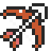

Using the Dungeon Tracker - Using the Overworld Tracker - Using the Autotracker
Using the Launcher

If you want to manually adjust your flags, the Gameplay Settings, Logic Settings, Goal Settings, and Starting Items can be adjusted to whatever mode you want. You can click on the header to expand the categories and adjust any flag that you want. If there are incompatibility issues with any of the modes, it will alert you when you start the tracker. Some modes have notes associated with them, which you can see by hovering over the [?] icons.

If you are using the tracker for restreaming, expand the section for Restreaming. First, enter in your supplied code into the Enter Code text field and click on Validate. As long as the code is correct, it will dispaly the proper section of which the code is supplied for, be it Restreamer or Racer/Tracker. You may then launch your tracker with the settings supplied. If you are a restreamer, you do not specifically need to set your settings, as it will be supplied by the Racer/Tracker. Also, you will not be allowed to click on anything on the tracker, but it will update every time a change has been made on the Racer/Tracker's tracker. If you are a Racer/Tracker, you can use your tracker as you normally would. This feature will only work when using the online version and not the offline version, and will be removed from the launcher when running offline.

When you have your modes set, you can adjust any custom display settings at Display Settings at the bottom.

You can choose any of the provided custom Sprites by selecting it on the dropdown. There are three options for maps:
None: This will only give you the item tracker and not the map tracker
Normal: This will give you the normal map tracker displayed to the right of the item tracker
Compact: This will give you a smaller version of the map tracker below the item tracker
Use Spoiler log will allow you to upload a non-race version of the spoiler log, provided by the ALTTPR generator. This will give you an additional screen upon loading the tracker where you can upload your spoiler log and select items that you'd like to have ignored. Anything ignored will have their spots unchecked from the map tracker, and locations with what items are available will be noted when you hover over them.

Use Spheres will load the sphere tracker. To use it, click on an item on the tracker, and then click on any of the ? squares on the sphere tracker. You can use this to determine what items are obtained logically behind other items, or track when you get an item out of sequence.

Use Autotracking will enable the listener for autotracking, which defaults on port 8080. Once you have all of your options selected, you can click on Launch Tracker and it will pop up the tracker. Note, if you have popups blocked, it may require you to make an exception for it.
Using the Item Tracker

Apart from the items, all of the dungeons, along with dungeon chests and options are always visible on the item tracker. Depending on the flags that are active, different options may be visible or hidden on the tracker, or show up differently. Each dungeon is shown with the dungeon's normal boss icon, and are shown on the left and bottom of the item tracker. The ? icon at the bottom right of the area is always visible and cycle through various known dungeon prizes with both left and right clicks. They cycle from Green Pendant => Blue/Red Pendant => Crystal => 5/6 Crystal => Map (Only available if maps are shuffled). Right clicking on the icon rotates backwards. Clicking on the boss will toggle between when a boss is defeated or not and will illuminate when it is marked as completed. Also always available will be the dungeon chest counts, which can be toggled through by left and right clicking on the chest icon. This will increment (left click) and decrement (right click) each count as you find items in the dungeon. An empty chest will show when all items are gone. Misery Mire and Turtle Rock also have medallion icons which can be cycled through with left and right clicks, to designate what medallion is required to open each dungeon. Ganon's Tower's chest count is listed under the sprite. At the bottom right corner of the item tracker are split icons for AGA1 and AGA2, to show when those bosses have been defeated.

If more advanced flags are set, more icons will show up as available on the item tracker. The ? icon to the top left of each dungeon is for enemy shuffle mode and can be cycled through with all of the possible bosses with left and right clicking. This is more important for information and if you are using the map tracker, to show which bosses can and cannot be defeated. If wild keys or wild big keys are active, the chest icon will become smaller, but will function the same way with left and right clicks. If wild keys are active, there will be a count of your current small key count next to the key icon. This can be toggled with left and right clicks. If Retro mode is active, this will always override the wild small key flag, and will start with the maximum number of keys for each dungeon. These will decrement and increment backwards as wild keys, as it can be used to mark how many keys are required to clear each dungeon. Hyrule Castle and Castle Tower small keys are located to the right of the sprite and are marked with HC and CT headers. If wild big keys are selected, the big key icon will be shown next to each dungeon and can be clicked on to check on and off.

If the Mystery flag is active, there is a flag icon under the goal icon to the left of the sprite. Clicking on this icon will bring up an extra Mystery menu where you can change any of the flags that were selected from the launcher. This is so you can adjust the flags when you discover what each mode is. After clicking on Submit, any changes to the tracker will be made immediately. If you switch between Inverted and any non-Inverted World State, and you are using the map tracker, any checked off locations will also be reset.

If the Grab Bag flag is active, there is a bag icon under the goal icon to the left of the sprite. Clicking on this icon will bring up an extra Grab Bag matrix, where you can change any of the known settings to try to isolate the mode. The dropdown list will update with the available presets. Once you have determined what the preset is, you can click on Submit and it will automatically adjust the settings to what you have selected.

Using the Map Tracker
Green: Can be obtained
Blue: Can be obtained, but may require dark room logical skips
Yellow: Can possibly be obtained
Purple: Can possibly be obtained, but require dark room logical skips
Orange: Can be seen, but cannot be obtained
Light Blue: Some, but not all, items can be obtained
Red: Cannot be obtained
Grey: Has been cleared
All locations are color coded based off logical coding in the randomizer. It is possible to obtain items and reach locations by sequence breaking those locations, but the tracker will not show this, as it follows the game's logic. Each dungeon is color coded as well with an outer and inner color. The outer color is for items in the dungeon, and will change based off obtained items and when the item tracker's dungeon chest count changes, and matches the same color coding. (NOTE: Orange is not an option in dungeons, so items like the torch item in DP will be shown as red without Boots) The inner square shows a ? icon by default, and will rotate through pendants, crystals, and potentially maps, as you cycle through the icons next to the dungeons in the item tracker. The color coding in the inner square matches the same color coding and shows if the boss can be defeated or not. Clicking on each overworld location will check off if you have cleared the location or not. Clicking on the dungeon chests and dungeon icons on the item tracker will change the status of the dungeon locations on the map. Also, hovering over each location will show a text description of what each location is under the map.

As you continue to progress through the game and find more items, the statuses of each location will continue to change to inform you of what locations and dungeons can be obtained. Be sure to keep your item tracker up to date to show what is needed to finish each location. The different flags chosen will designate what logical locations are available to you.

If you have a location where you want to put in a reminder for an item, you can right click on the location on the map, and then left click on the item that you want to assign. In doing so, by hovering over the mark on the map, it will give you the item reminder text below the map.
Using the Entrance Tracker

By left clicking on an entrance, it will check the entrance as cleared. To simplify the busy nature of the map in entrance mode, the icon is shown as a mostly invisible grey diamond. You can click on it again to re-show it, but this feature is to make the map more readable as your race progresses. Clicking on the squares for overworld locations will check off those locations as well. If you right click on an entrance, it will pull up an entrance menu. From here, you can perform various functions on the entrance. The name of the entrance will be at the top left of the menu. To the right of that will be an option to Add a Connector. More on how this works below. To the right of that will be a Note field, where you can type in a note about the location and press enter or click off of the menu, which will save the note. A small ? box will show up on the map above that location, which can be hovered over to show what the note says below the map. If there is a connector already established at the location, it will show the connected information in the Connected To line. Those connectors can be removed by clicking on the disconnect icon next to the name of the location. The bottom half of the menu will have a list of dungeons, key locations, and starting locations. By clicking on one of these, it will flag the location as an important location and it will tag the location on the map above the entrance's diamond with what you have selected. Dungeons are color coded as pink and key locations will be color coded as blue. If you make a mistake and need to change the tag, simply right click to the menu again and you can change it to whatever you want. Key locations are important to select! For example, the logic for the dam item is dependent on selecting the Dam key location on the entrance menu. Without it, it will not know if that item is obtainable or not.

To connect an entrance to another entrance, right click on the entrance to pull up the entrance menu, and click on the Add Connector icon. This will close the menu and bring you back to the map tracker, but a new icon will show at the bottom right of the Light World map area. This acts as a cancel button, which will cancel the action. To connect the entrance, simply click on the entrance that it connects to. The new logical reachable areas will change based off where you can now reach on the map.

If you have connector lines showing from clicking the eye button, it will also show you the connected line so you can visualize the connectors.

As a recommendation, when a dungeon is completed, or when a key location has been used and is no longer important, remove the information from the map. It can get quite busy and it will make it easier to read. If you want to view your known locations and entrances, you can click on the "notes" icon in the bottom right hand corner of light world, and it will bring up the known locations window.

Using the Dungeon Tracker
The Dungeon Tracker is a helpful tool when playing with Door Shuffle. It can help you remember paths in a dungeon for later, solve switch or key puzzles or remember which item is needed for a path.
When Door Shuffle is enabled, click on the map icon next to the player sprite to open a new window with the Dungeon Tracker. If you have more space, we recommend enlarging this window so that more and longer paths can fit in there without needing to scroll.

What exactly is being tracked?
The main goal of this tracker is to require minimal clicking and searching so that you can focus on the game more and not have to pause (at least after getting used to it, you should take your time on your first seed with this tracker).This means you won't be clicking on every room with a branching path you come across and keeping track of all connections between these rooms. Instead, using this tracker can be compared to note-taking that complements your memory of your previous dungeon visits instead of fully replacing it.
For each dungeon, as you are playing, you will be creating a list of paths. Each path consists of a concatenation of symbols (arrows, items, crystal switches and more) and complex or special rooms or entrances.
As an example, the two paths in the image below may indicate "If I go right and then up from the entrance, I need the Cane of Somaria to continue." and "The path right and right from the entrance is done.".
There is no right or wrong way to use the numerous symbols, the only thing that matters is that you know what your notes mean! The next section will go over the recommended usage for common scenarios during dungeon exploration.

Dungeon path tracking
| Game: | You enter a dungeon. | |
| Tracker: | If on the overview screen, click on the respective dungeon, usually represented by its vanilla boss. Then, under Start a new path, click on the entrance you're taking (if there are multiple). If Lobby Shuffle is enabled, we recommend that you associate every entrance with a number, depending on the order in which you first came across them. | |
| Game: | You come across a branching point and pick one of the available directions that you'll be following next. |  
|
| Tracker: | Click on an arrow or quadrant marker that depicts the choice you made in the game. The symbols in the middle of the arrows can be used to depict a hole or warp tile in a specific quadrant of the room. It doesn't matter which symbol you choose as long as you understand what it means when you revisit this room later. | |
| Game: | You find a big branching point (hub-like room). In addition to marking the next direction, you want to remember the room itself for later. |
|
| Tracker: | Click on Insert room node and then on the room you just found. By default, this will append this room to the current path, save it, and start a new path at this node. If you just want to insert the node and keep working on the current path, uncheck Split path at this node before clicking on the room. In Crossed, you can use the buttons at the top to filter how many and which rooms to display. Remember, you should only look for rooms here if they are big branching points or otherwise important rooms. Simpler branching paths should only be marked by arrows. | |
| Game: | You come across a crystal switch. | 
|
| Tracker: | Click on the crystal switch symbol. If a specific switch state is needed elsewhere, you might be able to use this switch for that. | |
| Game: | The path requires a specific crystal switch state (no matter the current state). |  
|
| Tracker: | Click on the orange or blue peg symbol, whichever color needs to be down. | |
| Game: | You reached a dead end (and opened all chests if there were any), or looped back to a previous point and it's not worth remembering this loop for later (for a switch puzzle or routing convenience). | 
|
| Tracker: | Click on the opened chest symbol. This will mark this path as finished. | |
| Game: | You died on the way or for some other reason didn't continue this path and might need to repeat it later. | 
|
| Tracker: | Click on the question mark symbol. This will mark this path as unfinished. | |
| Game: | An item you don't currently have is needed. | 
|
| Tracker: | Click on the symbol representing that item. Some symbols, like the torch, indicate that one of multiple items is needed. | |
| Game: | You are (for now) done with the current path (and marked it appropriately) and want to head back to the last branching point and take a different path from there. This usually happens after a dead end, looping back to a previous point or getting blocked by an item requirement. | |
| Tracker: | Click on Fork at last direction. This will save the path you just finished traversing for later, and copy everything before the last branch to this new path you're creating now. The next click should be for the direction of the new path you're trying. | |
| Game: | You are (for now) done with the current path (and marked it appropriately) and want to either leave the dungeon or try a completely different path. | |
| Tracker: | Click on Save and close path. This will save the path you just finished traversing for later, and return you to the path list of the current dungeon. If you want to leave the dungeon, click on its name or symbol at the top. | |
| Game: | You want to continue a previously unfinished path or create a new path based in some way on an existing path. | |
| Tracker: | Click on the path and then on Edit path, Duplicate or Fork, depending on what best fits your need. Note that if you do this while editing another path, your changes won't get saved. | |
| Game: | You have fully cleared the current dungeon and know that you won't ever have to come back to it for an item, the boss, the Thieves' Town attic bombable floor or a new connection to a different dungeon exit. |
|
| Tracker: | Next to Your paths, click on Mark dungeon completed. This will send you back to the dungeon overview and there hide any item requirements that were added for this dungeon. |


Some additional ideas can be found by clicking on Hints when creating or editing a path.
All of these are just recommendations. For every situation, it's up to you how you want to mark it. It will take some practice to get used to tracking while playing without losing time. At the beginning, don't hesitate to pause the game whenever you need more time to track properly.
Settings and saving
These should depend on the settings of the seed, but can be changed independently of the main tracker window based on preference.In Crossed Door Shuffle, the tracker allows you to place every symbol and almost every available rooms in any dungeon. In Basic, you can use the Flippers symbol and SP Hub node only in Swamp Palace, for example.
If Lobby Shuffle is enabled, there are nodes for generic dungeon entrances and the Sanctuary can be used as an entrance point in any dungeon. Otherwise, the entrance rooms for every dungeon are fixed and the Sanctuary is always part of Hyrule Castle.
You can decide whether Small Keys or Big Keys should be included in the dungeon overview. The main intention is that, if all keys are in their respective dungeons in your seed, information about where keys are needed is only important while in that dungeon.
If your browser supports and permits Local Storage, you can save your entire tracking progress in this window by clicking on Save data to the right of Manual save:. If you continue playing the seed at some later point, just click on Load data to the left.
Even if you forgot to save manually, there's a chance your progress is still automatically saved. Click on Load data next to Auto-save: to try.
Your currently loaded tracked paths and the saved data in Local Storage can be cleared using the respective buttons in the Reset: line.
Access the Settings menu by clicking on the cogwheel. The settings you can find here are automatically saved for future sessions.
The General tab provides customization options for the theme of the tracker, and other behavior.
The Dungeons tab lets you decide how many room nodes are displayed when you click on Insert room node while building a dungeon path in Crossed Door Shuffle. A basic explanation and a button that opens a preview are available below.
For Basic Door Shuffle, you can decide whether all or only dungeon-specific symbols are shown when making a dungeon path.
Example: Vanilla Palace of Darkness
Let us demonstrate the techniques described above with a specific example: Palace of Darkness like it would be without Door Shuffle. Lobby Shuffle will be off for this example.When you enter this dungeon in the game, in the dungeon tracker at the dungeon overview click on Helmasaur King to load Palace of Darkness.
Under Start a new path, click on the entrance room. (If Lobby Shuffle was enabled, there would instead be a generic dungeon entrance to click on.)
In the game, you start off with 3 choices: left staircase, door straight up or right staircase. First, take the left path. Click on a fitting arrow, like
 , to append this symbol to the current path.
, to append this symbol to the current path.The next room is a dead end that you don't ever have to return to. Open the chest and go back to the beginning. In the tracker, you can mark this dead end with
.
Next, click on
to try the middle path.This path is blocked by a key door. Let us assume that you have a key, but want to try the other remaining path before spending it. Click on
 to mark what is blocking the path.
to mark what is blocking the path.
 .
.The next couple rooms follow a linear path so you don't have to add any markers for them...until you get to the Mimics. You don't have a bow, so click on and then either Fork at last direction or Save and close path. In the game, go back to the dungeon entrance.

In the game, following this path, you get to what the tracker calls the Pit Room. There are a lot of branching paths from here, so if you want, you can insert a node specifically for this room into the path. Click on Insert room node and on the Pit Room.
From here on, decide on the next path you want to try and mark every decision with an arrow or quadrant marker. Most rooms with branching paths don't have a unique node in the tracker as the intention for tracking is to require few clicks and not much searching for the right room.
Using the Overworld Tracker
We'd appreciate feedback. If you have suggestions, encountered a problem or simply want to say if this feature was helpful for you, feel free to message Catobat#4610 on Discord. Thank you!
Overworld Shuffle is a new mode where tracking becomes much more important than usual.
To access the Overworld Tracker, enable Overworld Shuffle in the launcher. In the main tracker window, click on the map icon next to the player sprite to open a new window with the Overworld Tracker. If you have more space, we recommend enlarging this window so that a larger overworld map and longer paths can fit in there.


First steps
When opening the Overworld Tracker window, you are first asked to select the overworld mode settings for your seed (or continue a previous session, see below). When you're done and you're sure the settings are correct, click on Start, mode settings are final. If you're not sure about a mode setting and it might change later, use Start, mode settings may change.If you want to start out with the least restrictive settings (anything can be connected to anything and marked as anything), and possibly narrow down the mode later on (Mystery seed), you can ignore the settings above and click on Mystery mode (start with least restrictive settings).
In either case, all settings can be changed later, though it's best to have them entered correctly from the start so the tracker can fill in certain screen transitions automatically (and doesn't fill in too much if you set the mode to something too restrictive). If you want to apply this automatic fill after changing the settings later (and finalizing them), click on What would be affected? or Accept changes in the yellow box below the mode settings if it appears, or Auto fixes on the overworld map.
For more information regarding the individual settings, see Settings and saving below. For the syncing process between the two tracker windows (items, connectors and logic), see Items and sync and Sync with main window below.
Alternatively, if you want to continue with a previous session, go to Restore previous session near the bottom of the start page (or Save and restore on the main page at a later point) and use one of the buttons to load the respective saved data. Clicking on a button will show you the time when this save was created before confirming to load the data.
Next, access the Overworld Tracking page by clicking on the overworld icon below Overworld Tracker at the top of the main page or in the sidebar. If Door Shuffle is disabled, you can consider this the hub page (otherwise, you'll be switching between this and the individual dungeons).
The top of this page contains the Full map (which can be hidden with the arrow in the top-right), though it can also be accessed as a popout by clicking on one of the various Full map buttons throughout the tracker. If you have the sidebar enabled, you can even access this map from anywhere in the tracker without having to leave the page you're currently on! The use of this map of course depends on the mode you're playing, see the following sections for an explanation.
Depending on the size of the window, both worlds may fit on the screen at once. Otherwise, you can always use the Switch worlds button. The size of the map is handled automatically based on window size by default, but you can also choose to change the zoom level manually using the - and + buttons. You should always leave some free space at the bottom for buttons that pop up if you click on a screen or transition. More options are available through the Edit map view button.
If you know your Sanctuary (Dark Chapel in Inverted) save & quit spot will be vanilla (no Entrance or Door Shuffle), select Sanctuary (or Dark Chapel) under Common starting locations on the Overworld Tracking page. This is important for both the logic and finding convenient paths throughout the seed. For more information on these start locations and how to add save & quit spots in other places, read the Common starting locations section below.
Parallel and Full Layout Shuffle and Whirlpool Shuffle: Tracking overworld transitions
The recommended way of tracking screen transitions is by opening the Full map which can be accessed from the top of the Overworld Tracking page, window main page or sidebar. This will open a large overworld map and show you which transitions are currently accessible and which transitions have been tracked so far.To track a transition, simply click on the edge you started from and then on the edge you ended up at. For convenience, for the second part only edges with a matching direction will light up. Certain overworld options such as Keep Similar and Free Terrain can restrict the possible choices even further.
As you will notice later, to be able to use the full potential of this tracker, you are expected to track every single overworld transition you take. Don't worry, it will easily be worth it!
If you marked a transition wrong by accident, click on one of the affected edges and then Disconnect below the map.
If a whirlpool loops to itself, click on the whirlpool once and then on Self-loop below the map.
When playing with some form of Decoupled Overworld, the order in which the two edges are clicked is important: First click the one where the transition starts and then the one where it ends. The controls under the map while an edge is selected have separate buttons for deleting connections that lead away from this edge and connections going to this edge.
On the full map, you can see where certain transitions lead by moving the cursor over a screen or a single edge. However, for most cases, there is a much better way of finding out how to get back to a specific place: the Search path feature.


Crossed Overworld: Tracking crossed transitions
If this is combined with Parallel or Full Layout Shuffle, see the section above. The only difference is that transitions can now go across worlds. Such transitions will be marked with a cross.Otherwise, if the layout is vanilla:
Polar: This option only has an effect if Mixed Overworld is enabled. All screen transitions are determined by the tracked screen states (see the section below).
Chaos: Open the Full map which can be accessed from the Overworld Tracking page, window main page or sidebar. This will open a large overworld map and show you which transitions are currently accessible and which transitions have been tracked so far.
If you want to track a transition that isn't yet tracked, click on the transition once to mark it as vanilla (same world) or twice to mark it as the crossed variant, indicated by a cross. Click a third time to reset it to the untracked state.
When this option is combined with Keep Similar, clicking on one edge will affect all edges that are in the same group of similar edges.

Mixed Overworld: Tracking screen swaps
In Mixed, every overworld screen is in one of two states: normal or swapped. If it's in swapped state, the screen version that normally belongs to the Dark World is now part of the Light World.Open the Full map which can be accessed from the Overworld Tracking page, window main page or sidebar. This will open a large overworld map and show you which screen states have been tracked so far and which versions (Light and Dark World) belong to which world.
Whenever you visit a screen for the first time, pay attention to its state, move the cursor to the question mark on that screen in the tracker and click on Normal or Swapped respectively.
In case of a misclick, click on the screen that has accidentally been tracked and then on Reset state or Swap below the map.
If Mixed is combined with any of the above Overworld Shuffle modes and a transition is connected to a screen with unknown state, the edge will have a question mark. Whether it's additionally displayed as a crossed transition depends on the vanilla state of the target screen.
Tip: If you're unsure if you're currently looking at the Light World or Dark World map in the tracker, pay attention to the tree in the bottom-left corner in the desert/mire area. It will either be a Light World or Dark World tree depending on which world is being displayed behind it.


Flute Shuffle: Tracking flute spots
When Flute Shuffle is active, you need to tell the tracker where your flute spots are. Each overworld screen only has one possible position for a flute spot, so all you need to determine is which 8 screens contain a flute spot which you can tell just from looking at the flute menu.When you use the flute for the first time and you have marked your flute as activated in the tracker, the Kakariko screen on the Full map should have a Set flute spots button that brings you to the flute spot menu. Alternatively, you can click on Edit flute spots in the Overworld Tracking menu to access the flute spot menu.
In the flute spot menu, click on a screen to toggle whether it contains a flute spot. The one in the desert/mire area is set by default so there should be 7 more flute spots to place. If all 8 are set, simply close the map or click on Full map.
Note: Flute spots are only considered by the logic if the flute is marked as both collected and activated in the tracker. Check the Items and sync section below for more information!
Searching and finding paths
If you want to get back to a screen you have previously found, click on a button labelled Search path or Search and select a screen or preset. If you're already on the Full map, you can also select a screen first and then click on Search path below the map.The tracker will then compile a list of paths from all possible common starting locations (including flute spots if the flute is usable) to the selected target screen.
If the target screen is divided into multiple logical regions (like Bonk Rocks and the rest on the Sanctuary screen), the tracker attempts to find paths to all of them. If the search result list is long, consider filtering them by fixing a target region with a button press (Rocks in the previous example). It can also be helpful to look at which screen edge each path ends, indicated by a gray square on the last screen.
If, instead of (only) starting at the common start locations, you want to see if there's a quick path from your current location in the game, you can click on Select screen next to Start: Common starting locations and select a start screen. All logical regions of this screen are considered by default, but just like with the target, it can be restricted to a specified region.
If a starting screen is selected, there are three different modes in which paths are shown: In Must start here (default), only paths that start on the selected screen are shown, but fluting and using a save & quit is permitted. With Or from common, (direct) paths that start at the selected screen or at common starts are mixed together. Use No flute/quit to only obtain direct paths (no fluting or save & quit) that start at the selected screen.
When you check Mirror portals next to Options: and you have the mirror, the search also considers possible mirror portal placements, but only at the start or target regions. Paths using mirror portals will never replace other paths in the list, they're just additional search results.
If you currently have a follower that restricts your movement, like the red bomb (no ledges, connectors or save & quits), you can select the follower in the Options: row so that the search respects these rules.
Enable the option Must preserve mirror portal to only see paths that won't use the mirror or save & quits.
With Ignore item rules enabled, the search pretends like you have access to any item that might be relevant for overworld traversal.
Click on a path to view it with more details and lines connecting the edges of the screens. You can also click on View on map to attach the path to the full overworld map, highlighting screens that are on the path and numbering them, or Pin for later to permanently display it in a list on the Overworld Tracking page.
Note: For this feature to work properly, it is important that you have the common starting locations, items and connectors set correctly. Please refer to the following sections for more information. In the tracker, the bottom of the page also has a checklist for common issues with quick tips.
Common starting locations
The common starting location list keeps track of locations you can quickly access from almost any point in the game. This list should generally only include save & quit spots and flute spots.By default, only Link's House and flute spots (once the flute is obtained and marked as active) are included, but depending on the game mode and your progress in the seed you might also want to check the boxes for Sanctuary entrance, Mountain Cave entrance or Pyramid screen (or the corresponding ones in Inverted or Mixed mode) if these vanilla save & quit spots are available in your seed.
This list serves two purposes: It's used by the logic (a location is accessible if it can be reached from at least one starting location), and it's the default start region list when using the Search path feature.
If you're playing with vanilla Entrances and Doors, you don't need to worry about adding locations to this list other than the ones in the checkboxes. If, for example, you're playing with Entrance Shuffle, you can add the places that the Sanctuary exit and the Old Man Cave exit(s) lead to.
To add a region that's neither in a checkbox and nor a flute spot, open the Full map, click on the respective screen and, if there is a choice, choose a region that you think fits best below the map.
Items and sync
By default, your current item inventory gets sent from the main tracker window to this window.If you only use this Overworld Tracker in combination with another item/map tracker, don't forget to also mark certain items here in the Overworld Tracking menu!
Below the item list is a checkbox that determines if the flute is currently active. This information is important for the logic. This can also be set through the Full map by clicking on the Flute activated button after the flute was obtained.
If item (or connector) changes in the main window are somehow no longer being received even though item sync is enabled (this can happen if a window was refreshed), there is a way you can fix this problem:
In the overworld window, go back to the start page. Under Save and restore and next to Manual save:, click on Save data. Close this window. In the item tracker window, click on the map icon next to the player sprite to open a new Overworld Tracker window. Finally, click on Load manual save under Restore previous session (or at a later point Load data next to Manual save: on the main page) to get your tracking progress back.
Sync with main window
If you are also using the Community Tracker for item and map tracking, the logic from the Overworld Tracker can be used by the map tracker in the main tracker window. (This also means that the map tracker considers you responsible for telling the Overworld Tracker about flute activation and your save & quit spots!)This is enabled by default (this default can be change in the tracker settings). If you want to disable this functionality, uncheck Sync everything (logic, game mode, items and entrances) below the mode options. Note that, in this case, the main window logic will ignore Overworld Shuffle completely.
Enabling this full sync between the two tracker windows also means that items and connector caves will be shared between both windows. Otherwise, Sync items and Sync connector caves can still be enabeld individually. Please refer to the previous section for more information on that.
Note: It is very important that the tracker has been opened through the Community Tracker launcher and that some kind of Overworld Shuffle has been enabled in the launcher. All non-overworld-specific mode settings should also be correctly set there as these will also be used by the Overworld Tracker logic.
Connector caves
If Entrance Shuffle is disabled, there are a few checkboxes below the items you can use to tell the tracker logic which dungeon connectors you can currently use. If, in addition, Door Shuffle is enabled, a couple more checkboxes are displayed.If Entrance Shuffle is enabled, by default all connectors you marked on the map tracker get sent from the main tracker window to this window. Connectors then start at the entrance you clicked first and end on the second clicked one.
However, mostly for routing purposes, it can be helpful for this tracker to know if a connector is also usable in the other direction. If this is the case (and you currently have the items needed to do so), we recommend clicking on Both directions when you're getting asked by the tracker. Otherwise, click on Only one direction. This can be changed later by clicking on the connector on the Overworld Tracking page.
If you are not using the built-in Entrance map tracker to mark connectors, make sure to disable Sync everything (logic, game mode, items and entrances) and Sync connector caves in the sync settings (see above). This will allow you do add or remove connectors from within this window.
To add a connector in this manner, go to the Full map, click on the screen where the connector starts, and click on New connector. Then, click on the screen where the connector ends, maybe fill in region details depending on the screens, and determine whether you are currently able to also use this connector in the other direction, too.

Settings and saving
These should depend on the settings of the seed so the logic can work properly. See the sections above for explanations on how tracking the individual Overworld Shuffle modes works.Enabling one of the Layout Shuffle options allows you to track screen edge transitions. With Parallel, tracking an overworld transition in one world will automatically also mark the corresponding transition in the other world if a such parallel version exists. Full doesn't have this restriction.
Similarly, Whirlpool Shuffle allows you to track whirlpool transitions.
The Keep Similar option should be checked when the seed was rolled with the Keep Similar Edges Together option to quickly fill in groups of transitions in Layout Shuffle or Crossed Overworld. Which groups of edges count as similar depends on the Free Terrain setting.
Crossed Overworld allows you to connect edges between the Light World and Dark World, even if the layout is vanilla. In Polar with vanilla layout, marking edges is not needed as all edges will be vanilla.
Free Terrain allows you to connect land with water edges in Layout Shuffle.
With Decoupled Overworld connecting two edges in Layout Shuffle, Whirlpool Shuffle or Crossed Overworld will only mark it in one direction. Both sides of an edge can do different things. In Chaos (as opposed to One-to-one), there can be multiple edges leading to the same edge.
In Mixed Overworld, you can mark every overworld screen as normal or swapped.
When Flute Shuffle is enabled, the 8 flute spots are assumed to not be vanilla and will have to be marked.
The World State option needs to be set correctly to let the tracker now if the Inverted rules apply.
If some kind of Entrance Shuffle is enabled, the corresponding box should be checked to let the tracker know if the connector caves will be vanilla.
Changing the mode may cause a yellow box with some text about making transition adjustments based on the mode and some buttons to appear. Additionally, a button Auto fixes will appear on the full overworld map. If all mode settings are final, we recommend clicking on What would be affected? to get more information (which could prevent you from making a mistake) and then accepting the changes if you're sure all mode settings are correct.
If your browser supports and permits Local Storage, you can save your entire tracking progress in this window by clicking on Save data to the right of Manual save:. If you continue playing the seed at some later point, just click on Load data to the left.
Even if you forgot to save manually, there's a chance your progress is still automatically saved. Click on Load data next to Auto-save: to try.
Your currently loaded tracked transitions, states and paths and the saved data in Local Storage can be cleared using the respective buttons in the Reset: line.
Access the Settings menu by clicking on the cogwheel. The settings you can find here are automatically saved for future sessions.
The General tab provides customization options for the theme of the tracker, and other behavior.
The Overworld tab contains settings for the full overworld map, and the default behavior for new overworld searches.
Using the Autotracker
If you have chosen to use the auto tracker, you will need to be sure to have your setup configured so that the tracker can communicate with your rom. The Community Tracker requires the use of qusb2snes, which can be downloaded here: https://skarsnik.github.io/QUsb2snes/ and follow the instructions on how to download and install for your operating system.
To activate the auto tracker from the Launcher, be sure that Yes is selected in the Use Autotracking option under Display Settings, and you can manually type in a listening port. It defaults to 8080. If you have Remember Display Settings set, it will auto load your settings when you launch the tracker.

Start up qusb2snes by clicking on your startup executable. For example, in Windows, it is QUsb2Snes.exe.

Launch the Community Tracker with the Autotracking selection live and on the correct listening port. You will get a message from qusb2snes to allow for the tracker to communicate. You will need to click on Yes to allow.

You will need a device that is able to sent Lua Scripting, be it via your hardware or emulator. For emulator, we can recommend using snes9x-rr, located here: https://github.com/gocha/snes9x-rr/releases, but please refer to your hardware and software setup on how to enable Lua scripting. Please refer to the current ALTTPR Race Legal Rules for more information on what can and cannot be tracked.